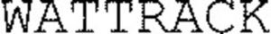

Trade Mark Journal No.2025/016 18 April 2025
WO0000001848604 (6,19)
Office of origin: France
Date of International Registration:6 February 2025
Date of designation in the UK:
6 February 2025

International priority date claimed: 8 October 2024
(France)
(5088536)
- Class 6
- Floating supports for loading solar panels, of metal; floating metal supports for photovoltaic installations for electricity production; prefabricated metal supports, for loading solar cells; buildings of metal; building materials of metal; floating structures of metal for photovoltaic panels; roofing, of metal, incorporating photovoltaic cells; supports of metal used for fixing plates; metal construction supports for storage; metal roofing panels; roofing, of metal, incorporating photovoltaic cells.
- Class 19
- Floating supports for loading solar panels, not of metal; floating supports not of metal for photovoltaic installations for electricity production; prefabricated supports not of metal, for charging solar cells; buildings, not of metal; building materials of plastic materials; synthetic building materials; floating structures not of metal for photovoltaic panels; roofing, not of metal, incorporating photovoltaic cells; roofing, not of metal, incorporating photovoltaic cells.
CIEL ET TERRE INTERNATIONAL
Representative: Madame DRABER Camille BUREAU DUTHOIT LEGROS ASSOCIES, 3 rue des Chats Bossus, F-59800 LILLE, FRANCE